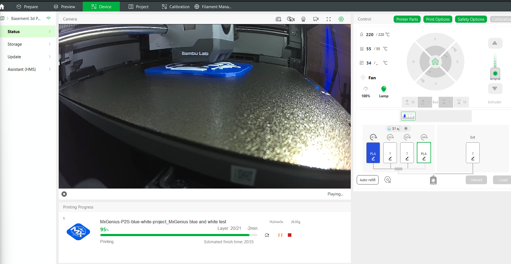

MXGenius hardware · evidence added October 7, 2026
From CAD to the first physical prints
The digital design, export, bulk slicing, and animated assembly pipeline is complete for this sprint. The physical apparatus is ready for prototype fit checks. Printing progress is evidence of fabrication; it does not establish a finished assembly or an accepted headset/remote-view test.
| Workstream | Completed work | Acceptance still open |
|---|---|---|
| CAD and logo kit | Windows Store Blender bridge; editable assemblies; color-separated MXGenius and X-drive badges with pegs, mating sockets, and fit coupons. Print files and native projects retained together. | Confirm peg/socket fit and mounting clearance on actual prints. |
| Standalone X-drive Rev3 | Eight closed printable enclosure parts for the Raspberry Pi, 52Pi power board, and purchased DeWalt battery-adapter footer. Unwanted upward fin removed. Ten-second exploded GLB published alongside the headset and build props. | Verify measured dock holes and latch clearance, board supports, ports, wire routing, cooling, and battery load. References in the animation are approximations. |
| FLIR / Quest 3S frame | Five primary printable parts: top hook, thin lower tongue, spine/rail, camera cradle, keeper. Optional sixth lower hook replaces the tongue. Removable centered frame, published FLIR ONE Pro Android USB-C 68 × 34 × 14 mm body envelope, and ten-second exploded GLB. | Fit the top loop and lower attachment, then check camera retention, lens/tracking-sensor/vent clearance and USB routing. The rail and headset attachment are prototypes, not certified interfaces. Keep the rigid USB connector unbent. |
| Adventurer 3 print packs | 28 native slices total, including the six-job FLIR subset and optional/test pieces. PLA, 0.4 mm nozzle, 0.20 mm layers, 5 walls, 6 top/bottom layers, 30% infill, 210°C nozzle / 55°C bed. Toolpath bounds and native checksums verified. | Print fit coupons and attachment samples first. The 69.9-hour / 486.83 g aggregate includes optional parts and supports; it is not a mandatory single build. |
| Bambu blue/white logo | New user-supplied physical print evidence: report at 95%, layer 20/21; clip near 97%, layer 21/21. Report displays 220°C nozzle / 55°C bed and estimated 26.93 g. | Confirm completion, inspect both colors, and test mounting. This Bambu project is separate from the Adventurer 3 toolpaths. |
| Remote Witness | Browser participant path scoped; headset-to-browser test is the next session. | User supplies the session code when ready. A live second-person computer/phone witness and end-to-end acceptance remain pending. |
Print order and saved pack
Local master folder: D:\AAog\artifacts\blender-connection. Keep the Adventurer 3 pack with its printer profile; do not send those machine-specific files to the Bambu.
PRINT-PACK-ADVENTURER3/ROBOTICS-USB-PRINTS-AD3.zip/ROBOTICS-COMPLETE-PRINT-PACK.zip: consolidated 28-job kit. The archive name predates this record; the contents documented here are the MXGenius apparatus parts.FLIR-PRINT-PACK-ADVENTURER3/FLIR-USB-PRINTS-AD3.zip/FLIR-COMPLETE-PRINT-PACK.zip: six-job FLIR subset, approximately 9.97 hours / 57.2 g including the alternative hook.- FLIR sequence: 01 top hook and 02 lower tongue first; dry-fit them. Print 03 optional lower hook only if replacing 02. Then 04 spine/rail, 05 cradle, and 06 keeper.
- For logos and X-drive, use the numbered pack order and fit coupons before the full case. Original editable CAD, print orientations, native projects, presets, and checksums remain in the complete archives.
Assembly models
- X-drive Rev3 exploded GLB · eight printable parts plus approximate hardware references.
- FLIR / Quest 3S exploded GLB · five primary parts plus camera references; alternative hook and cables omitted.
Printer evidence

All three recordings are playable in R&D Highlights. Shared Build and Readiness track the next checks without treating demonstration models as validated hardware.